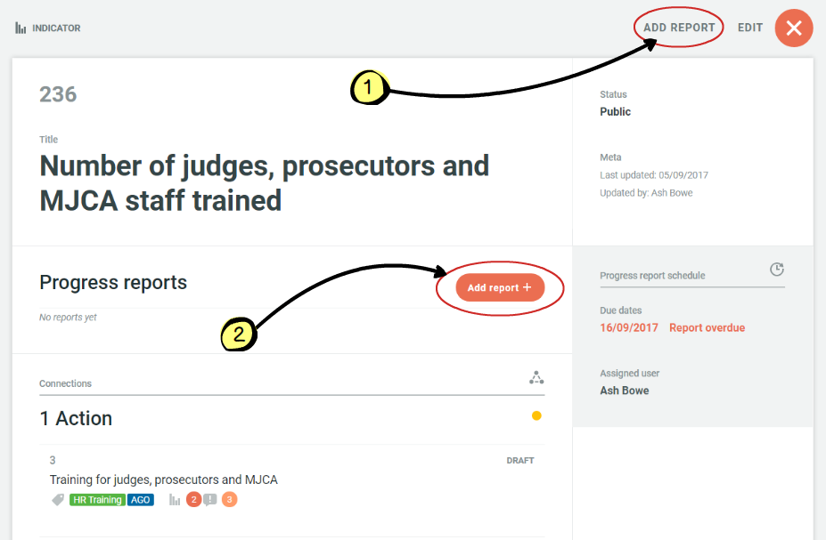
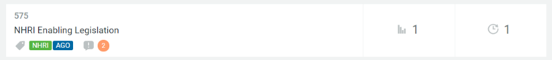
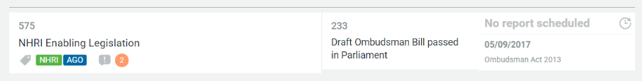
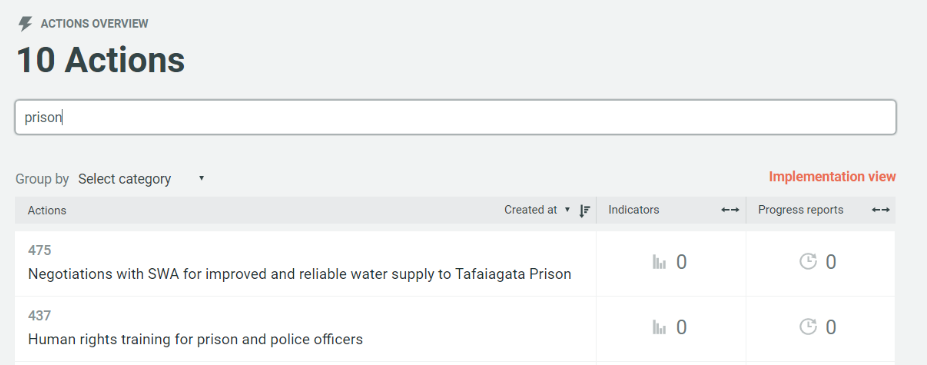
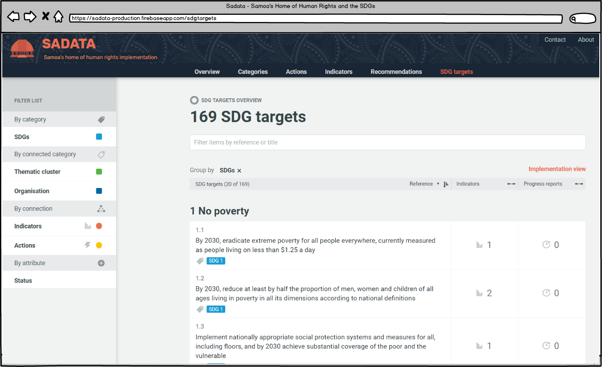
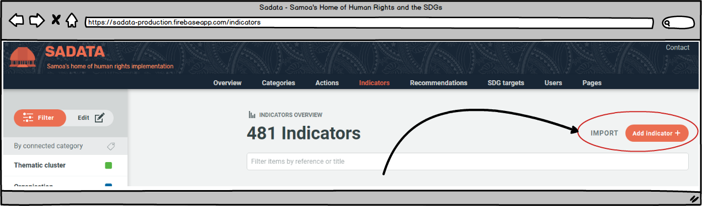
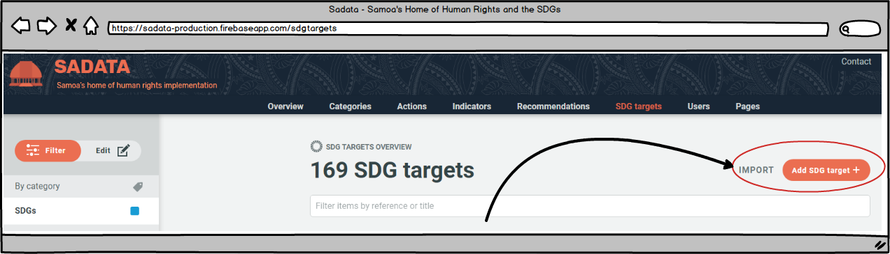

1. Introduction
1.1 What is Sadata?
The Problem
Each State around the world has a huge range of international obligations, in terms of human rights, the Sustainable Development Goals and more. Many of these obligations overlap meaning that one of the SDG targets may be asking a State to do the same thing as one of its UPR recommendations. However, up until now no tool existed to help identify all of those linkages and eliminate the duplication of activities and reporting that can occur as a result. With the birth of this software this is no longer the case.
The Solution
Sadata is a web tool for coordinating and monitoring implementation of human rights and the SDGs. It helps States develop a National Implementation Plan through sophisticated clustering of all obligations and recommendations it has received. Through a series of automated processes it helps to ensure ongoing data collection and guard against non-entry of data, meaning the Implementation Plan progress is always 100% up to date. This allows greater oversight by the public and civil society, and for States to have far greater control over implementation of its obligations - ultimately leading to more effective State implementation and reporting and improvements on the ground for everyday people, every day.
The Technology
Sadata is built using IMPACT OSS (Integrated Management and Planning of Actions Open Source Software). For more information on this software and how it was made please take a look at its development history.
The Users
Sadata is a primarily a tool for States to plan and monitor implementation of its human rights and SDG obligations. However, it has also been built with a wider audience in mind whereby civil society and other stakeholders can access the publicly available database and track progress, holding Government to account and contributing their own data where appropriate.
The Manual
The manual is split into three parts:
- How To - A quick start guide for users in some of the most common ways the software is designed to be used for: creating an implementation plan, reporting, monitoring implementation (either as Government or civil society) and editing.
- In Depth: Visitors - Everything visitors to the site need to know about how to use the tool from monitoring the implementation plan, to using the filtering system to find what the Government is doing in their area of interest to submitting information of their own.
- In Depth: Registered Users - Everything States need to know in how to use and setup the application. This section also details the different types of registered user and how they can perform their roles.
The manual is written using GitBooks, which allows readers and users of the software to suggest improvements or changes as the tool evolves.
The manual is a documentation file of the Sadata Open Source Software and draws upon relevant content from the IMPACT OSS manual permitted under its MIT licence.
The original manual was written by Mr. Ashley Bowe, for the Office of the High Commissioner for Human Rights, and Unfold Data
1.2 History
IMPACT OSS was designed and developed by human rights consultant Mr. Ashley Bowe and data visualisation agency Unfold Data with the help of Mr. Moana Eruera of the New Zealand Human Rights Commission (HRC) who together would later form the IMPACT OSS Group with the mission of advancing the enjoyment of human rights by promoting and developing suitable technologies.
The initial concept for the software that became IMPACT OSS, the open source software behind Sadata, was developed by Mr. Ashley Bowe who was subsequently employed by the Regional Office for the Pacific (ROP) of the Office of the United Nations High Commissioner for Human Rights to fundraise and project manage the development of the software.
The United Nations Development Program in Samoa and New Zealand Aid generously provided the required resources, allowing a tender to be put out for development services. New Zealand based Unfold Data were the outstanding choice and have since played a substantial role in the history of IMPACT OSS. Not only have they been responsible for all of the development and visual design, they have also contributed significantly to the final concept and data architecture. Further, having previously developed the National Plan of Action (NPA) for the New Zealand HRC, Unfold Data considered New Zealand's specific requirements from the start to allow IMPACT OSS being compatible with and adaptable to the specific needs of different countries.
This allowed the New Zealand HRC to become the final partner in the creation of IMPACT OSS, initially providing in-kind support and later funding the development of the Sustainable Development Goal module and other pending features soon to be released.
IMPACT OSS was thus born in Samoa and New Zealand and is now currently being used as the software platform for Sadata in Samoa and soon also for the future version of the NPA in New Zealand. From the outset it was decided that this innovative software would be released under an open source license - a Pacific global offering to improve implementation and reporting of human rights and the SDGs around the world.

1.3 Glossary & Icons
General
National Implementation Plan
The National Implementation Plan consists of the obligations of the State in relation to human rights and the SDGs. It also contains the actions the Government is planning to do to implement those obligations and contains the data of progress achieved to date.
National Mechanism for Implementation, Reporting and Follow-Up
Government body responsible for coordinating all human rights implementation and reporting. May also contain representatives from civil society, NHRIs, judiciary, Parliamentarians, private sector
User roles
Please see User roles & responsibilities for more details.
Role: Visitor
Any member of the public visiting the site.
Role: Guest
A registered user implicitly assumes the role "Guest".
NGOs, NHRIs or any member of the public can contribute data as a Guest Contributor to show progress towards any part of the National Implementation Plan or SDGs. This gives groups and individuals a platform to showcase their work to Government and to encourage more coordinated activities.
Role: Contributor
A user promoted to "Contributor". As the data owner for an indicator the user can be assigned to that indicator and become an Indicator Manager. A user can be promoted to Contributor and/or be assigned an Indicator Manager by either a Manager or Administrator (see below)
Role: Manager
A user promoted to "Manager" can become a
- Category Manager responsible for an area of the National Implementation Plan (e.g. UPR recommendations, CRC recommendations, SDG targets, etc.),
- Implementation Plan Manager responsible for developing and updating the National Implementation Plan.
Role: Administrator
A user promoted to "Administrator" can be responsible for
- editorial content,
- managing other Users, including Managers,
- the application overall.
Principal Implementation Plan Entities
Recommendations


Recommendation | Accepted | Not accepted
States receive Recommendations from the Universal Periodic Review, the UN Committees of the Treaties it has ratified and the Special Procedures. These Recommendations are entered into the application and are clustered to form the basis of the National Implementation
Learn more: for visitors | for registered users
Actions

Actions are what the State says it is going to do to address Thematic Clusters (see below) of **Recommendations **and implement those obligations
Learn more: for visitors | for registered users
SDG Targets

One or more SDG Targets have been defined for each Sustainable Development Goal (SDG, see below).
Learn more: for visitors | for registered users
Indicators

For each Action there will be at least one indicator, which describes how the success of that Action will be measured. Indicators have also been defined for SDG Targets
Learn more: for visitors | for registered users
Progress reports

When an Indicator is created within the application a date is set for when the information/data is due. This could be a one off or an ongoing process (e.g. quarterly crime statistics). When information is due the Indicator Owner will receive an automate email to upload the required data. This is called a progress report.
Learn more: for registered users
Taxonomies
Taxonomies are groups of categories that allow to classify and cluster the principal Implementation Plan entities (see above)
Learn more: for visitors | for registered users
Thematic Clusters

Thematic Clusters are groups of Recommendations that make the National Implementation Plan more manageable. For instance, if Recommendations were received on the same topic from the UPR and CRC Committee they can be put into one thematic cluster and dealt with together, eliminating duplication and taking a coordinated approach to implementation
Categorise: Recommendations
Human Rights Bodies

Human Rights Bodies, incl. Treaty bodies, refers to the Committees which issue recommendations to States on how to meet their human rights obligations. This taxonomy also includes the Universal Periodic Review and Special Procedures. Recommendations within the application are tagged with the relevant treaty body so users can easily see where they came from.
Categorise: Recommendations
Cycles

Each Human Rights Body Committee reviews the State on a regular basis. The cycle allows users of the application to easily see which cycle the recommendations relate to.
Categorise: Recommendations
Human Rights Issues

The application contains a list of human rights issues which are used to tag Recommendations
Categorise: Recommendations
Affected persons

The application contains a list of groups of persons which are used to tag Recommendations
Categorise: Recommendations
Recommending States
The application contains a list of all United Nations member States so that recommendations made during the Universal Periodic Review Process can be tagged with the country who made the Recommendation.
Categorise: Recommendations
Organisations, incl Government Agencies

The application contains a list of organisations, mainly Government agencies, which are used to tag Actions
Categorise: Actions
Sustainable Development Goals (SDG)
The Sustainable Development Goals is a set of 17 global goals covering a broad range of sustainable development issues. Within the application they can be used to tag SDG targets
Categorise: SDG targets
Other Icons
| Icon | Name / description |
|---|---|
| Categories | |
| Connected Categories: categories (or tags) inherited from a connected entity | |
| Connections: relationships between entities, eg an action is connected to a recommendation | |
| Entity attributes, eg publication status | |
| Delete entity | |
| Indicator reminder | |
| Due Date | |
| Filter entities | |
| Edit entities |
2. How To
2.1. Create Your National Implementation Plan
2.3. Monitor the Implementation Plan
2.1 Create Your National Implementation Plan
The National Implementation Plan consists of the obligations of the State in relation to human rights and the SDGs. It also contains the actions the Government is planning to do to implement those obligations and contains the data of progress achieved to date. A National Plan can be created for either human rights or the SDGs, or both.
The obligations, which form the basis of the National Implementation Plan, can be SDG targets, human rights recommendations received from the Universal Periodic Review, Treaty Body Committees, the Special Procedures or the substantive articles of the Treaties themselves. These are often overlapping in nature so the application helps the user to create a National Implementation Plan where all linkages are identified, eliminating duplication of reporting, helping to foster a coordinated implementation approach and to identify any gaps from the outset. If a national Implementation Plan is developed for both human rights and the SDGs any crossover can also be identified and duplication of efforts reduced yet further.
Once the National Implementation Plan has been developed, users of the application will add regular progress reports and anyone will be able to track how well implementation is progressing.
Creating Your Human Rights Implementation Plan in 3 Easy Steps
1.Enter human rights recommendations or Convention articles
This can either be done by importing recommendations or articles in bulk or entering them one by one. Simply click on the 'Recommendations ' tab in the top menu bar and get going. For more information on adding recommendations and articles click here.
2. Cluster your recommendations and articles
By creating clusters the wide ranging obligations become more manageable and easier to track. There are two ways to cluster recommendations and articles. The most efficient is to go to the 'Recommendations' tab in the top menu bar as above and (1) use the filtering and search functions to find similar obligations, (2) select them and then (3) click on 'Thematic Cluster' in the left hand menu bar to create and name a new cluster to put them in.

Alternatively, recommendations or articles could be allocated to clusters individually by finding the one you want, clicking on it to edit and assigning it to a cluster. More information on both approaches can be found here. For more information on the difference between 'filtering' and 'editing' click here.
3. Add Actions and Indicators
Now the framework for the National Implementation Plan has been created all that is left to do is add the actions (and associated indicators) that will achieve it. Adding actions and indicators can also be done individually or by importing multiple entries at once. First click on the 'Action' or 'Indicator' page in the top menu bar and then select whether to import or add.

If adding multiple entries then the actions/indicators can then be assigned to clusters or individual recommendations/articles using the filter and edit process. If adding one by one then at the time of creation this can be done. Additionally, if you are creating a single action you can also create the indicator(s) associated with it as part of the same process, without having to click on the 'indicators' tab in the top menu bar. For more information on how to carry out these functions click here.
Whilst multiple indicators can be imported it is important to edit each one individually as this is where responsibility for an indicator can be allocated to a user. For instance if Rosemary Bowe is responsible for conducting human rights training for new police recruits every six months then she needs to be given responsibility for uploading the training data twice a year. This can be done when creating a new indicator or editing an old indicator. Rosemary must be an existing registered user or will need to be sent a registration link for this to happen.
Actions and indicators can and should also be linked to the SDG targets where appropriate. For instance if the work Rosemary is doing, as described above, also helps to meet SDG target 16.3 it can be linked when the action or indicator is being created. That means that any data Rosemary uploads will also be tracked against SDG 16.3 even though it is only uploaded once.
Top Tip States should start off by looking at what is already planned in the coming years which will already address the thematic clusters and once this is done that will identify where the gaps are and actions can be devised to help meet these gaps. At any point it is easy to check whether gaps exit by going to the recommendations page and filtering to see which recommendations do not currently have any actions._
Finally: Monitor and update
The Implementation Plan is never finished! States will continue to receive additional recommendations from the Treaty Body Committees, the UPR and the Special Procedures. Once any new recommendations are received then these need to be entered into the database, assigned to existing or new clusters and actions assigned to them to make sure they are addressed.
The SDG Implementation Plan
The SDG Implementation Plan works in exactly the same way as above except for the need for clustering the targets as this has already occurred given they are grouped within specific SDGs. If a State is using the software for both human rights and SDG reporting then as soon as they have finished developing one then work has already started on the other, as actions will have been linked across the two plans. It then just requires the State to identify the gaps and add in extra actions and indicators.
The SDG Implementation Plan can be developed on its own using the steps above (omitting the thematic clustering), as can the Human Rights Implementation Plan. however, States receive additional benefits from using the two in conjunction with each other as it eliminates duplication of reporting and activities across human rights obligations and the SDGs.
An Example Implementation Plan
 screenshot covering an illustrative section
screenshot covering an illustrative section
2.2 How to: Report (add data)
Adding progress reports is critical to the success of using this tool. Progress reports contain the data required for each indicator of the National Implementation Plan. This regular entry of data allows States, civil society and other stakeholders to check progress of the Plan and ensures that required reporting is just a matter of analysing the data and writing the narrative.
Data can be entered through progress reports by civil servants, administrators of the database or civil society and other stakeholders.
Reporting as an Indicator Owner
Each indicator in the Implementation Plan is assigned to an Indicator Manager who is responsible for uploading the relevant information, either as a once off or on a regular basis. That Indicator Manager will receive an automated email when the information is due.

Once an email reminder hass been received the Indicator Manager simply needs to:
-
Click on the link in the email (not pictured)
-
Enter login details (if not already signed in)
-
Filter the indicators using the 'My Indicators' option and click on the relevant indicator
-
Click on 'Add Report' (1 or 2 in screenshot below)

The Indicator Manager will then be taken to the following screen:

The Indicator Manager simply needs to fill out the required fields:
-
Title: The title of the progress report (E.g. 'Domestic violence stats Q3 2017' or 'NHRI CEDAW Training Workshop for Police Recruits'
-
Description: Full details of the progress report
-
Upload document: Information/data related to the indicator should be uploaded via this link
-
Public/Private: The status of the uploaded document can be set to public or private depending on whether there is sensitive information contained within that should not be available publicly
-
Draft/public: The status of the progress report. Once it is ready to publish on the public site, this status should be immediately changed to public.
-
Due date: As an administrator, both scheduled and unscheduled progress reports can be entered. The Administrator is required to indicate here whether the progress report they are uploading is unscheduled or scheduled.
-
Save/cancel: This is where the Administrator can save all of the details that have been entered, or clear the form using the cancel button
Reporting as a Contributor (Civil Society and Individuals)
Anyone is able to submit information via the application if they think it is relevant to a particular area of human rights or the SDGs. To do so you must first register as a user. Details on how to do so can be found here.
Secondly, and once logged in, you must navigate to the relevant indicator using the search or filtering functions. More details on using those functions can be found here.
Once the relevant indicator has been found the contributor simply needs to click on the 'Add report' button' as described above for Indicator Managers and follow the same set of instructions.
*** Reports submitted in this way will not automatically appear on the site. They will first be reviewed by a Manager and once approved will appear ***
Reviewing Reports as a Manager
Once a report is submitted by a Contributor the registered user the relevant Manager will receive an automated email informing them. The email notification will contain a link to the report - once the Manager has signed in they will be taken to the report to review the contents. To accept the contents of the report and make it public the Manager should change the status from 'draft' to 'public'.
Reporting as an Administrator
An Administrator can also choose to submit reports at any time and in relation to any indicator. To do so, simply follow the instructions for reporting as a contributor (above). Reports submitted by Administrators can be made immediately public by changing the drop down menu from 'draft' to 'public' when submitting the report.
Setting Up Indicator Managers
Setting up an Indicator Owner means assigning responsibility for a particular indicator to a registered user. That user will then be receive the automated report reminder emails and be responsible for uploading the report and data. This can only be done by Managers and Administrators.
For an Indicator Manager to be assigned, the person in question must first be a registered user. If they are not the Administrator must contact them and request they register. Details on how to register can be found here. Once the person is a registered user the process is as follows:
-
The registered user role must be changed from 'no role assigned' to 'contributor'. To do so the Administrator needs to navigate to the 'Users' page and update their role. Full details on how to do so can be found here.
-
The Administrator must then find the indicator they wish to assign to the registered user. The quickest way to do this is via the 'Indicators' tab in the top menu bar and using the search and filter functions. Clicking on the indicator will allow the Administrator to choose to edit the indicator and once editing they can assign it to the desired registered user using the drop down menu and recording when reports should be uploaded. Full details on adding and editing indicators can be found here.
2.3 How to: Monitor the Implementation Plan
The monitoring of the implementation plan is crucial for both the State and civil society. It tells both when progress is falling behind what it should be and where that is happening. The tool makes it easy and simple to quickly check progress of the whole plan, or any part of the plan which may be of interest to the user.
To view the human rights Implementation Plan and start monitoring click on 'Actions' in the top menu bar and then select 'Implementation view'. (To view the SDG Implementation Plan click on 'SDG Targets' and make the same selection.)
Clicking on this link will provide you with the Implementation Plan:
-
The Implementation Plan is automatically organised by thematic cluster. In the example above we are looking at the 'Human rights training for law enforcement officials' thematic cluster. Clicking on this title would bring up all of the recommendations contained within the cluster.
-
Underneath each cluster you will first see the actions that are being undertaken to achieve the goals and recommendations of that cluster. The tags underneath the action (e.g. HR Training, AGO) indicate the categories the action is tagged with - in the first example Human Rights training as the issue and the Office of the Attorney general as the implementing agency. Clicking on the action will bring up full details.
-
Alongside the actions are the indicators associated with that action. There may be one or more indicator for each action. Clicking on the indicator will bring up the full details.
-
The progress reports column shows any data (contained within a progress report) that has been uploaded against any indicator, when the next progress report is due and if any are overdue. This allows the viewer to scroll down and quickly see where information is overdue and the State can then take corrective action or civil society can raise questions as to why that is. The information that appears here will also be mostly visible to the public so civil society and other stakeholders can access the information just by clicking on the link (in the above example where it says 'Guest report'. Unless there is sensitive information States are encouraged to make all progress reports publicly available for improved transparency and accountability.
-
The State, civil society or other stakeholders can use the filters and search box to focus on parts of the Implementation Plan, depending on their area of interest. For instance, if an NGO just wanted to look at parts of the plan relating to persons with disability they could click on the 'affected persons' link in the left hand menu bar and select that demographic. The implementation plan would then just show the parts affecting persons with disability.
Monitoring the implementation plan is therefore simply a case of:
i. scrolling down the list of thematic clusters to see where progress reports are overdue; or
ii. clicking on progress reports to check data; or
iii. using the filtering and search functions to look into any section of the implementation plan and identify overdue progress reports or analyse information already submitted as per points (i) and (ii).
2.4 How to: Edit and Add Entities
The database is made up of information entered into it by the State and is designed so that it is flexible and can be used in a way that meets the needs of any country. All of the information and categorisations are totally flexible and can be created and edited as needed. The following can be classified as entities within the database:
- Categories (human rights body, reporting cycle, human rights issue, affected persons, thematic clusters, organisations, SDGs)
- Actions
- Indicators
- Recommendations
- SDG Targets
_***Key Fact*** To edit or addentities you need to be assigned as an 'Administrator' or 'Manager' after you register as a user. For more information on user roles click here. _
Adding New Entities
Adding Single Entities
Adding new entities is very straight forward. The Administrator or Manager simply needs to navigate to the page relevant to the entity they wish to create. I.e. either categories, actions, indicators, recommendations or SDG targets. On each of these pages is an 'add' button placed in the top right hand corner of the content frame. On all of the pages other than the categories page there is also an 'import' button.
To add a single entity simply click on the 'add' button and enter all of the required details. For full details of what information is required refer to the 'add' section in the relevant pages for categories, actions, indicators, recommendations or SDG targets.
**Importing Multiple Entities **
A time-efficient way to add new actions, indicators, recommendations or SDG targets is to use the 'import' function to import multiple entities in one go. The process for importing is the same for the different types of entity. First, the Administrator or Manager clicks on the import button as shown above on the relevant entity page - the following box will then appear:

-
Clicking on this link allows the Administrator or Manager to download a CSV template for importing multiple entities. If the template structure is not used then the batch import will not work. The Administrator or Manager should download the template, copy and paste their data into this file and then save it using an appropriate file name.
-
Once step 1 has been completed the Administrator or Manager clicks on the 'select file' button and chooses the file from their computer. The batch import will then commence and a progress bar will appear until the upload is complete. The entities will now appear in the database.
***Key Fact*** When batch importing, it is only possible to import the following:
- For actions: title, description, target date, target date comment
- For indicators: title, reference, description
- For recommendations: title, reference, government response
- SDG target: title, reference, description
It is not possible to assign entities to categories, tag with connected categories, link to connections or assign draft/public status. This can be done when adding individual entities but not importing multiple entities. Instead, the Administrator should use the batch edit function (see above) to assign, tag and link immediately after importing.
Editing Entities
'Edit' v 'Filter' Mode
'Filter' mode is available to all registered users and visitors and allows for actions, indicators, recommendations or SDG targets to be filtered by category, connected category, connection or status.

The edit function is available only to Administrators and Managers.
-
Once an Administrator or Manager is signed in the filter list now becomes a filter or edit list, with filter selected as the default (coloured orange)
-
Options to select the page of results or individual results now also appear.
As soon as any of the results are selected by the user the mode will automatically switch from 'filter' to 'edit'

Once the Administrator or Manager is in 'Edit' mode they can update the selected entries (either Actions, Indicators, Recommendations or SDG Targets) and change the entry associations (e.g. the category tags, actions, indicators, thematic cluster). This allows the Administrator or Manager to edit entries in bulk.
To edit any entity an Administrator or Manager can simply click on the entity they wish to edit at any time, on any of the pages of the application. Clicking on the entity will bring up the full details and an 'edit' button.
Editing a Single Entity
Example: Editing an affected person category
First the Administrator needs to navigate to where their entity can be found. To edit any category (as listed above) the Administrator needs (1 below) to click on the 'Categories' link in the top menu bar and then (2) click on the relevant taxonomy. Clicking on any of the categories (3), such as 'Children', brings up the second image below, from where the Administrator can go in to edit the entity and all associations it has (e.g. linked recommendations, actions, etc.):


The same approach is required to any action, indicator, recommendation or SDG target - simply find the entity in question, click on it and hit the 'edit' button to get going.
For more detailed instructions on how to edit please see the relevant sections for categories, actions, indicators, recommendations and SDG targets.
Batch editing
Batch editing is a powerful function of the application as it allows Administrators or Managers to update multiple entities in a single move, saving considerable time and effort.
Batch editing can be carried out in relation to actions, indicators, recommendations and SDG targets, but not categories. It allows an Administrator or Manager to update multiple entities at once in any of the following ways:
- Add multiple actions or indicators to a thematic cluster
- Assign multiple actions or indicators to an organisation
- Assign multiple indicators to an SDG
- Tag multiple actions or recommendations with any connected category (human rights body, cycle, human rights issue, affected persons, SDGs)
- Link multiple actions or indicators to any connection (action,indicator, recommendation or SDG target)
- Link multiple recommendations to actions
- Change the draft/public status of multiple actions, indicators, recommendations or SDG targets
- Change or denote the Government response to multiple UPR recommendations
The batch edit function works in the same manner for all of the above use cases and is demonstrated below.
First the Administrator or Manager needs to identify and select the actions they wish to batch edit and then secondly they update the selected actions as they wish.
- The Administrator or Manager can select the actions they wish by first using the filtering and search functions to bring up the relevant actions on their screen. More information on how to use these functions can be found here. Once the relevant actions have been identified the Administrator or Manager can either:
- Select individual actions using the checkbox next to each action (see #1 on image below)
- Select all actions on the page displayed (see #2 on image below)
- Select all actions returned by the search and filtering results if they do not fit onto a single display page (see #3 on image below)

- Once the relevant actions have been selected the Administrator or Manager can then use the menu on left hand side of the screen to link the selected actions to any category, connected category or connection. For example, if the selected actions were to be linked to a particular thematic cluster the Administrator or Manager would click on the thematic cluster title in the left hand menu bar and the box 1 below will appear. Box 2 shows what happens when the Administrator or Manager selects the thematic cluster they wish to link to the actions:

-
The Administrator or Manager can use the filter box to search for the thematic cluster (or category/connection) they wish to find
-
Where some, but not all of the selected actions are already linked to a thematic cluster the Administrator or Manager is shown a box with a horizontal line. By clicking once on any of these boxes (so that a tick appears) and then 'Update' the Administrator could update the thematic cluster to either be linked with **all **of the selected actions. By clicking on the box twice (so that the box is empty) and then 'Update' the Administrator or Manager can unlink all of the selected actions from that thematic cluster.
-
Where a thematic cluster is not currently linked to any of the selected actions the Administrator or Manager is shown a blank box. By clicking once in any of these boxes (so that a tick appears) and then 'Update' the Administrator could update the thematic cluster to either be linked with **all **of the selected actions. In this example, the box on the right demonstrates how this works if the Administrator or Manager selects 'CRPD Implementation'
-
If a thematic cluster does not exist which the Administrator or Manager wishes to link all of the selected actions to they can create one using this button
-
At the top of the list is a summary of how many thematic clusters are already linked to all or some of the actions. By clicking once on this box (so that a tick appears) and then 'Update' the Administrator or Manager can link all of the selected actions to all of the thematic clusters. By clicking on the box twice (so that it is blank) and then 'Update' the Administrator or Manager can unlink all of the selected actions from all of the thematic clusters.
-
When a thematic cluster is selected then a tick will appear in the box
-
The 'Update' button will only be active once the Administrator or Manager has made one of the changes described above. Clicking on the update button will save those changes. This may take several seconds if editing a large number of actions at once.
2.5 How to: Filter and Search
The filter and search functions of the application are powerful tools that can be used for a number of purposes, including:
- Exploring actions, indicators, recommendations or SDG targets by affected persons, or human rights treaty or other category any keyword of your choosing;
- Finding the actions, indicators, recommendations or SDG targets you wish to update or edit, either individually or as a group (only possible as an Administrator or Manager)
Searching
The search box appears at the top of each of the following pages: actions, indicators, recommendations and SDG targets.
The user can enter any keyword or reference number to search that particular set of entities (in the example above the 567 actions in the database).
The search function can be used to find specific entities (e.g. by entering a UPR recommendation reference number) or by searching for a group of similar entities (e.g. by entering 'prison' to view all actions involving prisons).
The search function searches the titles and the references - it does not search descriptions or any associated categories, or connections. To search by associated categories or connection the filtering system should be used.
Filtering
The filter function allows users to filter the results of the page they are on using some or all of the following criteria:
- Thematic cluster
- Organisation
- Human Rights Body
- Reporting Cycle
- Human Rights Issue
- Affected Persons
- SDG
- Action
- Indicator
- Recommendation
- SDG Target
- Draft/public status (administrators only)
The filtering system works in the same manner across the different pages. The arrow points to the filtering list on the actions page, which is always in the same place on all of the pages. To start filtering the user simply needs to click on the category, connected category or connection they wish to filter by. For example, if we want to filter by affected pesons body and click on that title, the following box appears
For example, if we wanted to filter by human rights issue on the recommendations page, the user simply needs to click on the 'affected persons title and the following box will appear:
The list of human rights issues appears in the right hand column, through which the user can scroll. The number next to each issue indicates the number of results will be returned if this filter is applied. To apply the filter the user simply needs to select the check box to the left of the required issue.
Multiple filters can be applied by repeating the steps described above.
Once a filter is applied the tag appears in the search box:
In the example above we have filtered for recommendations that fall within the issue of 'international obligations' and affect 'girls'. Should the user also wish to enter a keyword into the search box to further refine the results they can do so. Alternatively, if they wish to remove one of the filters they simply need to click on the cross in the tag box (as per the picture above).
Filtering to Edit
Administrators can use the filter function to select the entities they wish to edit individually or in bulk. They must be logged in to do so. For more details on how to editing entities click here.
2.6 How to: Register
Users have to be registered in the following way:
-
Click on the 'Register' link in the top right hand corner of any page, as circled above.
-
Complete the registration form, entering name, email address and a confirmed password (see image below)

** _It is important to note that simply registering as described above only allows the user to contribute draft progress reports to indicators as a Guest Contributor. To publish and edit other information, specific user permission rights have to be granted by an Administrator or Manager. __Click here _for more details **
3. In Depth: Visitors
3.1. Using Sadata as a Visitor
3.3. Actions & The Implementation Plan
3.1 Using as a Visitor
Whether you are an NGO or interested member of the public, this application allows visitors to:
- Track how Government is performing in relation to its human rights and Sustainable Development Goal (SDG) targets and goals
- Select and explore areas of interest in what the Government is doing and plans to do (e.g. in the area of women's rights or in relation to a particular SDG target)
- Contribute own data to demonstrate what your organisation has been doing to help achieve these goals
- Register as a user and become a guest contributor of information to the National Implementation Plan (as an organisation or an individual)
Once you click 'Explore' on the homepage the next page you will be taken to is the visitor dashboard, from where you can access all of the information contained within the database, tailored to your own needs using our advanced search and filtering systems.
**All information demonstrated is for illustrative purposes only **
1. Headline Bar
The headline bar allows you to navigate through the different types of information you can find within the tool:
Overview: The landing page (pictured above)
Categories: Categories are the ways in which actions, indicators, recommendations and the SDGs are indexed. The different types of categories are listed down the left hand side of the overview screen. You can look at the categories in more detail by clicking on this tab or on any of the categories in the list on this page. This will allow you to easily explore recommendations and actions within each category. For more details click here.
Actions: This tab will take you straight to the Implementation Plan view, containing all of the actions the Government and partners are doing or planning to implement human rights and achieve the SDGs. You can filter through the list of all recommendations depending on your area of interest, see how the Government is progressing, access data relating and even upload information relating to your own work. For more information click here.
Indicators: Each action, as described above, has at least one indicator of success. This tab allows you to explore all indicators depending on your area of interest and is also an area where you can upload your own information relating to these indicators. For more information click here.
Recommendations: Each country is party to a number of human rights treaties (e.g Convention on the Elimination of All Forms of Discrimination Against Women). For each treaty it has signed it has a range of legal obligations to implement and regularly receives recommendations from the respective Treaty Bodies on specific areas for improvement. Additionally each country undertakes a Universal periodic Review every 4.5 years and has a standing invitation to all United Nations Special Procedures. Out of both of these processes each country receives recommendations for how to implement its human rights obligations too.
This tab allows visitors to browse through all of the recommendations a country has received, and to see what the Government is doing to meet its commitments. This is the tab where visitors can view the overall Implementation Plan, assess progress or filter recommendations specific to their own area of interest. For more information click here.
SDG Targets: The Sustainable Development Goal targets are 169 internationally agreed goals to achieve the 17 SDGs. Visitors can use this tab to look through the targets and explore what a country's government is doing to achieve them and examine progress to date. For more information click here.
2. Categories
By selecting any of the categories on the left menu bar of the Overview page you will be able to explore the different category groups listed and the associated recommendations and actions for each. For more information click here.
3. Overview
The Overview map is a visual representation of the information contained within the application at any moment in time. It allows users to see how many human rights recommendations and SDG targets there are at a glance and how the actions being taken to address these form the overall National Implementation Plan. Clicking on any element of the Overview map will take the user to the relevant area of the tool where they are able to delve into that information further.
4. Additional Links
In the top right-hand corner of all pages are the additional links for visitors to access the following:
- Sign-in, if they are a registered user
- Register, if they wish to become a registered user (for more information click here)
- Additional information pages, added by Administrators, such as 'About' and 'Contact Us'.
3.2 Categories
Exploring Categories
The recommendations and actions that make up the National Implementation Plan are categorised in a number of different ways (called taxonomies or category groups) to allow visitors to explore the information based on their specific areas of interest, or to arrange the information in a way which meets their needs. Each category has it's own unique 'tag' which is attached to recommendations, actions and indicators for users to easily identify how it is identified.

In the example above, the icons below the recommendation show the different tags that have been assigned. Hovering the cursor over any of the tags will bring up the full title, in this case 'CRC' is shown to be 'Convention on the Rights of the Child'. Clicking on any of the tags will take the user to a page specifically for that category, and display all recommendations and actions associated with it.
The taxonomies in detail

Human Rights Bodies
This taxonomy or group of categories covers all human rights bodies or mechanisms that can make recommendations to a State on how to implement its human rights obligations. There are three different types of categories which may fall under this taxonomy:
- Treaty body committees: For each international human rights convention (e.g. Convention on the Rights of the Child) there is an accompanying Treaty Body Committee. The body makes recommendations to each State that has ratified the treaty and it is these recommendations which are entered into the application and are addressed through the National Implementation Plan.
- Universal Periodic Review: Every 4.5 years every member of the United Nations undergoes a Universal Periodic Review - a peer to peer review of each country's human rights record. The outcome document contains recommendations which are entered into the database in the same way as recommendations received from the treaty body committees.
- Special Procedures: The United Nations has many special procedures mandate holders - either working groups or individuals who are independent experts and who are granted a mandate to examine a particular human rights issue. Arising from these type of visits is a report also containing recommendations, which will be entered into the national Implementation Plan as above.

Cycles
Both the treaty body reviews and the Universal Periodic Review are regular and ongoing. The 'Cycles' taxonomy allows recommendations to be classified by specific cycle. E.g. if the user wants to only view recommendations and associated actions from the most recent Universal Periodic Review they can easily select this using the 'Cycles' category.

Human Rights Issues
The Office of the United Nations High Commissioner for Human Rights has developed a Human Rights Index which contains a classification system that is the basis for the 'Human Rights Issues' taxonomy. It helps users search by particular area of interest and see what the Government is doing in that field of work.

Affected persons
In the same way that 'Human Rights Issues' allows users to examine particular issues in detail, 'Affected Persons' allows the user to do that with a wide range of demographics. This is again based on the United Nations Human Rights Index system.

Thematic clusters
Every United nations member State receives hundreds of recommendations from the human rights bodies, the Universal Periodic Review and the Special Procedures. There is often overlap between some of the recommendations and in many case they can be similar or be the same. This can make the management of those recommendations more difficult than it needs to be. The application allows the Government to cluster recommendations into general headings to help alleviate this issue.
Clustering recommendations in this way not only helps make implementation more manageable but it also helps to identify crossover and eliminate duplication of work and reporting. The National Implementation Plan is a series of thematic clusters (which each contain one or more recommendations) and for each of these the Government identifies a number of actions and indicators. As more recommendations are received these can either be added to existing thematic clusters or a new cluster created.
For the user, this taxonomy once again allows them to explore potential areas of interest using the categorisation system. The thematic clusters are liable to change.

Organisations
The organisations taxonomy lists the Government agencies (and others) carrying out actions contained within the National Implementation Plan. Visitors can use this taxonomy to easily see what work any particular Ministry is doing in the areas of human rights and the SDGs at the click of a button. If your organisation is doing a variety of work related to the actions contained with the National Implementation Plan you can contact the administrator using the 'Contact' link on the website to discuss your involvement.

Sustainable Development Goals
In addition to being a tool which helps track and coordinate implementation a country's human rights obligations, the application also does the same in relation to the SDGs. Visitors can therefore click on this taxonomy to explore the SDG targets in more detail or to look into what actions the Government is taking to achieve the SDGs. The tool helps to draw the links between the work the Government is doing in relation to the SDGs and the work it is doing in relation to human rights, again eliminating duplication and increasing efficiency.
3.3 Actions & The Implementation Plan
The 'Actions' page contains all of the actions the Government (and other actors) have committed to in order to implement State human rights obligations and the SDGs.
When you first arrive on this page, the default view is to group the actions by thematic cluster. This is the National Implementation Plan.
Page Elements and How to use Them
The Implementation Plan
- The 'Human Rights Cluster', which the actions fall within. Users can click on the cluster text to see all of the actions and recommendations associated with that cluster.
- The Actions themselves. Users can click on any of the actions to see all of the recommendations and SDGs it is helping to address, the target date, which clusters it falls within the the organisations responsible for carrying out the action.
- The first two boxes are the categories connected to that action. In this case the 'Human Rights Training cluster and the Office of the Attorney general. Clicking on either of these tags will take the user to see all actions associated with that category. The circle with a '3' inside it indicates the number of recommendations the action is helping to address. The user can see all of the recommendations by hovering their cursor over this icon.
- Denotes the number of indicators associated with that action. The user can expand this box by clicking on it.
- The number of reports/pieces of data uploaded related to that action. The user can expand this box by clicking on it.
Expanding the Implementation Plan - 'Implementation View'
The Implementation Plan can be viewed in either 'List View' or 'Implementation View'. 'List View' gives the user an overview of the indicators and reports associated with an action whilst "Implementation View' gives the user a more detailed view and with direct access to any associated indicators and reports/data. The user can toggle between the views in two ways:
- By clicking on 'Implementation View' towards the top right-hand corner of the screen (see image at top of this page). Once selected the user can revert by clicking on 'List View' in the same place.
- By clicking to expand the boxes in list view as described above.
The difference between the two views is illustrated below.
List View:

Implementation View

Grouping Actions
The default grouping of all Actions contained within the database is by Thematic Cluster. The user can change this as they wish to suit their needs.
By clicking on the cross next to the grouping the user can remove that category and select their preferred category from a drop down list. A sub-group category can also be selected if required.
Searching & Filtering
For a user there may be an overwhelming number of actions, nor may they all be of interest. The tool therefore offers a range of filtering options to help users narrow down the number of actions according to personal preferences or areas of interest.
Searching By Reference or Title
Each Action has a reference number and title describing the action. Users can enter words or numbers in the box indicated on the image immediately above to filter the list of actions. For example, if a user was only interested in actions relating to 'prisons' they could enter that word into the filter box and the number of actions would immediately be reduced to only those with 'prison' in the reference:

** Please note, the default number of search results returned at any time is 20. If a user wishes to view more than this at any one time they can scroll to the bottom of the page and select up to 100 per page from a drop down menu **
Filtering by Category, connected category, connection or attribute
The filter list is a powerful tool for users, allowing them to filter actions (and also indicators and recommendations, as discussed in chapters below) in a variety of ways to suit their needs. The filter list can be located on the left hand side of the screen, as per the image at the top of this section.
Clicking on any of the headings in the filter list will bring out the categories of that taxonomy:
The pop out menu shows the user all of the categories and the number beside each one shows how many actions each category has associated with it. In this example we have a number of organisations who have either one or two actions associated with them and 559 actions which have yet to be assigned to an organisation. (Please note that this is test data).
The user can simply select which organisation they are interested in and the filter will be applied. If the list of options is long and the user is unable to see the one they would like, there is a search box within the filter pop-out.
For instance, if we select Office of the Attorney General then we are shown the two actions owned by that organisation:
The filter the user has applied appears in the filter box in the centre of the page (circled in red). The user can choose to remove the filter for the Office of the Attorney General by clicking on the cross on the tag or they can choose to add another filter to reduce their search results even further. This can be done either using the filter list on the left-hand side or by typing a word or number into the filter box, as described above.
3.4 Indicators
Indicators are the measure of success of whether actions have been completed. For each action there should be at least one indicator and for each indicator progress reports should be uploaded demonstrating success or progress.
The Indicators tab works in a very similar manner to the Actions tab, except its focus is on the indicators and allows users to search through the all indicators contained within the database, using the filtering tools described in the previous chapter.
Indicator Views
Similar to the Actions tab, there are two different views for Indicators - the 'List' view and the 'Implementation' view. Users can select which view they prefer using the link below the bottom right-hand corner of the filtering text box (see image above or read the Actions page for more details)
Grouping Indicators
Unlike actions, indicators do not have a default grouping already set when you land on the page.
However, the user can still group the indicators in the same manner by using the drop down menu found below the filtering text box (see image above). For more instructions read the Actions page.
Filtering
Filtering of indicators works in the same way as filtering actions. It can be done either through entering words/numbers in the filtering text box at the top of the screen or by selecting from the filter list on the left hand side.
A difference to be aware of is that the filter list for indicators is smaller than that for actions. This is because indicators are linked directly to actions and are therefore one stage removed from categories such as Human Rights Body, Cycle, Issue, and Affected Persons. Other than having a smaller filter list, the process is the same. For more details read the Actions page.
Accessing Progress Reports
If a progress report has been uploaded for an indicator it will be visible to any visitor (circled below).
Unless the progress report has been made private for reasons of data protection then the visitor can click on the progress report title and download the information in full.
3.5 Recommendations
Recommendations are received from the various Human Rights Bodies and are intended to help a country implement its human rights obligations. This page is a collection of all of the recommendations a country has received. The default grouping when users arrive on this page is to group recommendations first by Human Rights Body and then by Cycle.

The 'Recommendations' page works similarly to both the 'Actions' and 'Indicators' pages in that it allows users to explore and filter recommendations based on areas of interest. Unlike 'Actions' and 'Indicators' there is only one view with Recommendations as there is no Implementation Plan to explore in this area.
Grouping Recommendations
By default recommendations are grouped by human rights body and then cycle, showing users the groups of recommendations that were received at any one time. If a user would like to group the recommendations differently simply click the cross next to 'Human Rights Body' or 'Cycle' (see image above) and select a different grouping from the drop down menu. For more instructions read the Actions page.
Searching & Filtering
Searching and filtering of recommendations works in the same way as filtering actions and indicators. It can be done either through entering words/numbers in the search text box at the top of the screen or by selecting from the filter list on the left hand side. This includes being able to filter by Action or by Government response (UPR recommendations can be either accepted or 'noted' - all other recommendations received are inherently accepted by the Government by way of being party to that Treaty.
For more details on how to filter read the Actions page.
3.6 The Sustainable Development Goal Targets
There is significant overlap between the SDGs and human rights (E.g. SDG 5: Gender Equality and CEDAW) and drawing these links helps to increase coordination in implementation and eliminate duplication of efforts and reporting.
There are 169 internationally agreed SDG targets, all of which are contained within the application. A State using the application may choose to add additional actions and indicators that reflect how a country is setting about achieving the SDGs.
Visitors can therefore explore everything the Government is doing to achieve the SDGs and how work being undertaken in the field of human rights is also helping to achieve the SDGs and vice versa.

The 'SDG Targets' page works similarly to the 'Actions', 'Indicators' and 'Recommendations' pages in that it allows users to explore and filter recommendations based on areas of interest. Unlike 'Actions' and 'Indicators' there is only one view with Recommendations as there is no Implementation Plan to explore in this area.
Grouping Recommendations
By default SDG targets are grouped by specific SDG, showing users the targets contained for each individual SDG. If a user would like to group the SDG trggets differently simply click the cross next to 'SDGs'' (see image above) and select a different grouping from the drop down menu. For more instructions read the Actions page.
Searching & filtering
Searching and filtering of SDG works in the same way as filtering actions, indicators and recommendations. It can be done either through entering words/numbers in the filtering text box at the top of the screen or by selecting from the filter list on the left hand side.
For more details on how to filter read the Actions page.
3.7 Register
Visitors may want to become Users at some point, in order to upload a report/date for a particular indicator within the National Implementation Plan. E.g. an NGO who has conducted a human rights training program on the rights of person with disabilities would like it recorded in the National Plan.
See Register
4. In Depth: Registered Users
This application allows users to organise human rights recommendations and the SDGs, track implementation and record progress by uploading reports and data. It requires users to do this, usually Government employees. There are different types of users types and roles and this section outlines exactly what they are and how they can be registered. These different user types and roles allow for the protection of sensitive information and to control who can make fundamental changes to the way information is collected and implementation is tracked.
4.1. User roles & responsibilities
4.1 User roles & responsibilities
Role: Visitor
Any member of the public that is not registered or logged in. This manual contains a whole chapter on how Visitors can make the most out of visiting this site. To read, click here.
Rights
- Access and explore all published information using the filters and search functions
- Track progress on the National Implementation Plan and thus how the Government is performing
Role: Guest
Role implicitly assumed when registered
Rights
- Can create draft progress reports (thus become user type "Guest Contributor")
- All the above
Function: Guest contributor
Contributors are registered users who can submit information relating to the National Implementation Plan or the SDGs, but don't have to be part of the Government. NGOs, NHRIs or any member of the public can thus contribute data to show progress towards any part of the National Implementation Plan or SDGs. This gives groups and individuals a platform to showcase their work to Government and to encourage more coordinated activities. For instance, a contributor could be an NGO who has been doing work in a particular area that is helping to achieve one of the areas of the Implementation Plan or the SDGs. Any organisation or individual can register as a user and contribute data as they see fit. In addition to raising awareness of the work they are doing this can also help to foster better coordination of activities with Government. For more information on adding reports, click here.
Responsibilities
- Add progress reports to existing indicators and upload data. Note: progress reports will have to be reviewed and published first by an authorised user to become public
Role: Contributor
Rights
- Can be assigned to indicator
- Can create public progress reports for assigned indicators
- Can view draft content
- All the above
Function: Indicator Manager
The data owner for an indicator and this are key to the success of the data entry - they are the registered users who upload information against all of the indicators. Once assigned to an indicator the user becomes responsible for uploading data at the required time. For more information on adding reports, click here.
Prerequisites
- Assigned to indicator (by user with at least role "Manager")
Responsibilities
- Add progress reports and upload data for the indicator the user has been assigned to
- Receive automated reminder emails when a progress report is due (weekly, 30 days ahead of due date) and overdue (daily, after due date has passed)
Example
**All information demonstrated is for illustrative purposes only **
The image above demonstrates what actions, indicators and look like in the Implementation Plan. In the example highlighted, two indicators have been set for the Action (training for judges, prosecutors and MJCA). The final column demonstrates when the information relating to those indicators is due. On that date the user who has been assigned to these indicators - in this case likely the training facilitator - will receive an email with a link requesting that they upload the information for each.
Should they fail to do so then they will continue to receive email reminders until the data has been uploaded. This is the first safeguard against non-entry built into the application. Data can be uploaded in any file type format.
Role: Manager
Rights
- Can be assigned to a category (thus become user type "Category Manager")
- Can assign Contributor to indicator
- Can promote Guest to Contributor
- Can create and update categories and other entities (except pages)
- All the above
Function: Category Manager
The person responsible for an area of the National Implementation Plan (e.g. UPR recommendations, CRC recommendations, SDG targets, etc.) and thus for sets of recommendations. Category Managers play an oversight role to ensure that data is entered when required - thus providing the second safeguard against non-entry of data.
For each 'Human Rights Body' category, as well as for each SDG, a 'Category Manager' should be assigned by one of the Administrators.
At each NMRF quarterly meeting each Manager should provide an overview of recently added data/information to the Working Group.
Prerequisites
- Assigned to suitable category
Responsibilities
- Assign users to indicators
- Oversee and follow-up data collection
- Receive automated reminder emails when a progress report is overdue (weekly, after due date has passed) for indicators in the assigned area.
- Raise repeated failure to upload with the relevant Ministry at the next scheduled meeting of the National Mechanism for Reporting and Follow-Up.
- Review and publish progress reports added by Guest Contributors
- Should provide an overview of recently added data/information to the Working Group at each NMRF quarterly meeting
Function: Implementation Plan Manager
Responsible for developing and updating the National Implementation Plan.
Responsibilities
- Create and edit recommendations, actions and indicators, as well as categories
- Connect and categorise recommendations, actions and indicators
- Adding newly received recommendations into the database and assigning them to clusters, as directed by the NMRF
- Maintaining and updating the category lists
Role: Administrator
Rights
- Can assign Manager to category
- Can promote users to Manager and Administrator
- Can create and update pages
- All the above
Function: Content Editor
Responsible for editorial content.
Responsibilities
- Create and update content pages
Function: Application administrator
Application administrators play a critical role in maintenance of the application.
Rights & Responsibilities
- Manage users
- Report bugs
4.2 Adding & Editing Content
One of the roles of Administrators and Managers is adding and editing the base content, such as:
- Recommendations
- Actions
- Indicators
- Thematic cluster titles
- Categories
- Actions
- Affected persons
There are a variety of methods of adding and editing content, including through batch importing. These processes are outlined in the relevant pages later in chapters 4.3 to 4.7. It is also important for Administrators and Managers to understand the difference between the 'edit' and 'filter' modes.
'Edit' v 'Filter' Mode
'Filter' mode is available to all users and visitors and allows for actions, indicators, recommendations or SDG targets to be filtered by category, connected category, connection or status.

As soon as an Administrator or Manager is logged in this view changes to:

-
The filter list now becomes a filter or edit list, with filter selected as the default (coloured orange)
-
Options to select the page of results or individual results now also appear.
As soon as any of the results are selected by the user the mode will automatically switch from 'filter' to 'edit'

Once the Administrator or Manager is in 'Edit' mode they can update the selected entries (either Actions, Indicators, Recommendations or SDG Targets) and change the entry associations (e.g. the category tags, actions, indicators, thematic cluster). This allows the Administrator to edit entries in bulk. The full details of what is possible for each type of entry is discussed in the chapters below and is only applicable to Administrators and Managers.
4.3 Categories
Editing/Adding Categories
In addition to being able to use the 'Categories' page to view information in the same manner as visitors, Administrators and Managers can also 'Add' and 'Edit' categories. To do so, the Administrator first selects the category group (also called taxonomy) they would like to add categories to or edit within using the menu on the left hand side of the screen (1).
If the Administrator wishes to edit an existing category they click on the entry they wish to edit (2), which will bring up the category and an edit option. Clicking on the edit button will allow the Administrator to amend any of the details of that category.
To add a new category (i.e. a new human rights body, cycle, issue, cluster, etc.) click on the 'Add category' icon (top image, #3). The following content box will then appear:
-
Reference: A reference ID can be manually added or will be automatically assigned
-
Title: A short description of the category (e.g. name of the human rights body, overview of thematic cluster, organisation name, etc.)
-
Short title: An abbreviated version of the title that will be used for the associated tag. E.g.
-
Description: Longer description if required (optional). This is a useful field to provide visitors with more information on a particular category.
-
Recommendations: Clicking on the drop-down list allows the Administrator to tag any recommendations with the newly created category. The Administrator does so by finding the required recommendations (using the filtering system if necessary) and uses the check boxes next to each recommendation. This function is available when adding new Human Rights Bodies, Cycles, Human Rights Issue, Affected Persons and Thematic Cluster. In exactly the same way, Actions can be tagged to new Thematic Clusters and Organisations and SDG targets can be tagged to new SDGs.
-
Website: If additional information on a category can be found via an external URL it can be noted here and accessed by visitors to the site (e.g. The website for the Committee on Economic, Social and Cultural Rights)
-
Category Manager: *Only visible for Human Rights Bodies and SDGs* A category manager can be added using this drop down menu. . This needs to be an already registered user. For more information on Managers click here.
4.4 Actions
Administrators and Managers can 'add or edit' data via the Actions page.
Adding Actions
There are two ways for an Administrator to add actions:
-
Add single actions
-
Import a file of multiple actions

Both methods of adding actions can be accessed via the buttons in the top right hand corner of the actions page (pictured above).
Adding a single action:
Click on the 'Add Action' icon and the following form will appear:

-
Title: Short title of action
-
Description: Additional details of action
-
Recommendations: Clicking on the drop down menu allows the Administrator to link the Action to any of the recommendations contained within the database. At the bottom of the drop down menu is also an 'Add' button where the Administrator can choose to add a new recommendation from here to link to the Action if they wish.
-
SDG Targets: Clicking on the drop down menu allows the Administrator to link the Action to any of the SDG targets. At the bottom of the drop down menu is also an 'Add' button where the Administrator can choose to add a new SDG Target from here to link to the Action if they wish.
-
Indicators: Clicking on the drop down menu allows the Administrator to link the Action to any of the Indicators. At the bottom of the drop down menu is also an 'Add' button where the Administrator can choose to add a new Indicator from here to link to the Action if they wish.
-
Status: Automatically set to draft, the Administrator can change this to public once the Action is ready to be published on the public site. The status of actions can also be changed in bulk using the filtering system on the Actions page (see below)
-
Target date: The target date for completion of the activity
-
Target date comment: Any relevant comments regarding the target date (optional)
-
Thematic cluster: Clicking on the drop down menu allows the Administrator to link the Action to any of the pre-existing Thematic Clusters. By linking an action to a thematic cluster it will automatically be linked to all of the recommendations contained within that cluster. At the bottom of the drop down menu is also an 'Add' button where the Administrator can choose to add a new Thematic Cluster from here to link to the Action if they wish
-
Organisation: Clicking on the drop down menu allows the Administrator to assign primary responsibility for an Action to an Organisations. At the bottom of the drop down menu there is an' Add' button where the Administrator can add a new organisation if the relevant one has not already been entered
-
Cancel/Save: This is where the Administrator can save all of the details that have been entered, or clear the form using the cancel button
Adding multiple actions
By clicking on the 'Import' button (top image) the Administrator will be provided with a CSV template download (see image below) for batch importing multiple Actions. Once in the required format the Administrator can click on the 'Select File' button and upload their file and all of the Actions will automatically be imported.

Editing Actions
There are also two ways in which Actions can be edited; individually and batch editing.
Individual editing
Individual editing is as simple as finding the action you wish to edit, using the search and filtering functions and clicking on the action title in question, which brings up the following screen with an Edit button (circled):

Clicking the edit button allows the Administrator to edit all of the fields associated with that action including:
- Adding/editing the responsible organisation
- Adding/editing thematic clusters the action is linked to
- Adding/editing the recommendations the action is linked to
- Adding/editing the indicators the action is linked to
- Adding/editing the SDG targets the actions is linked to
- Editing the draft/public status of the action
- Editing the target date and target date comments
- Deleting the action
Batch editing
Batch editing of actions (or other entities such as recommendations, indicators or SDG targets) is a powerful feature that allows Administrators to efficiently edit actions in a variety of ways including:
- By setting the status of multiple actions from draft to public
- By linking multiple actions with any category (i.e. a thematic cluster or organisation)
- By linking multiple actions with any connected category (i.e. human rights body, cycle, issue, affected persons or SDG)
- By linking multiple actions with any connection (i.e. Indicators, recommendations or SDG targets)
Batch editing is a simple process - first the Administrator needs to identify and select the actions they wish to batch edit and then secondly they update the selected actions as they wish.
- The Administrator can select the actions they wish by first using the filtering and search functions to bring up the relevant actions on their screen. More information on how to use these functions can be found here. Once the relevant actions have been identified the Administrator can either:
- Select individual actions using the checkbox next to each action (see #1 on image below)
- Select all actions on the page displayed (see #2 on image below)
- Select all actions returned by the search and filtering results if they do not fit onto a single display page (see #3 on image below)

- Once the relevant actions have been selected the Administrator can then use the menu on left hand side of the screen to link the selected actions to any category, connected category or connection. For example, if the selected actions were to be linked to a particular thematic cluster the Administrator would click on the thematic cluster title in the left hand menu bar and the box 1 below will appear. Box 2 shows what happens when the Administrator selects the thematic cluster they wish to link to the actions:

-
The Administrator can use the filter box to search for the thematic cluster (or category/sub-category/connection) they wish to find
-
Where some, but not all of the selected actions are already linked to a thematic cluster the Administrator is shown a box with a horizontal line. By clicking once on any of these boxes (so that a tick appears) and then 'Update' the Administrator could update the thematic cluster to either be linked with **all **of the selected actions. By clicking on the box twice (so that the box is empty) and then 'Update' the Administrator can unlink all of the selected actions from that thematic cluster.
-
Where a thematic cluster is not currently linked to any of the selected actions the Administrator is shown a blank box. By clicking once in any of these boxes (so that a tick appears) and then 'Update' the Administrator could update the thematic cluster to either be linked with **all **of the selected actions. In this example, the box on the right demonstrates how this works if the Administrator selects 'CRPD Implementation'
-
If a thematic cluster does not exist which the Administrator wishes to link all of the selected actions to they can create one using this button
-
At the top of the list is a summary of how many thematic clusters are already linked to all or some of the actions. By clicking once on this box (so that a tick appears) and then 'Update' the Administrator can link all of the selected actions to all of the thematic clusters. By clicking on the box twice (so that it is blank) and then 'Update' the Administrator can unlink all of the selected actions from all of the thematic clusters.
-
When a thematic cluster is selected then a tick will appear in the box
-
The 'Update' button will only be active once the Administrator has made one of the changes described above. Clicking on the update button will save those changes. This may take several seconds if editing a large number of actions at once.
4.5 Indicators
Administrators and Managers can 'add or edit' data via the Indicators page. They are both also able to add progress reports to indicators.
Adding Indicators
There are two ways for an Administrator to add indicators:
-
Add single indicators
-
Import a file of multiple indicators

Both methods of adding actions can be accessed via the buttons in the top right hand corner of the actions page (pictured above).
Adding a single indicator:
Click on the 'Add Indicator' icon and the following form will appear:

-
ID: Administrator can add an indicator ID. If left blank an ID will automatically be assigned.
-
Title: Short title of indicator
-
Description: Additional details of indicator
-
Actions: Clicking on the drop down menu allows the Administrator to link the indicators to any of the actions contained within the database. At the bottom of the drop down menu is also an 'Add' button where the Administrator can choose to add a new action from here to link to the indicator if they wish.
-
SDG Targets: Clicking on the drop down menu allows the Administrator to link the indicator to any of the SDG targets. At the bottom of the drop down menu is also an 'Add' button where the Administrator can choose to add a new SDG Target from here to link to the indicator if they wish.
-
Status: Automatically set to draft, the Administrator can change this to public once the indicator is ready to be published on the public site. The status of actions can also be changed in bulk using the filtering system on the indicator page (see below)
-
Due date: The due date for the next indicator report
-
Repeat? If the indicator requires regular report (e.g. gender based violence statistics every quarter) then a repeat data report due date can be set, meaning the user responsible for providing the data reports will receive regular email reminders on the dates set
-
Assigned user: Clicking on the drop down menu allows the Administrator to choose from all of the registered users who is responsible for this indicator. Once allocated, this user will receive automated email reminders when progress reports are due
-
Cancel/Save: This is where the Administrator can save all of the details that have been entered, or clear the form using the cancel button
Adding multiple indicators
By clicking on the 'Import' button (top image) the Administrator will be provided with a CSV template download (see image below) for batch importing multiple Indicators. Once in the required format the Administrator can click on the 'Select File' button and upload their file and all of the Indicators will automatically be imported.
Editing Indicators
There are also two ways in which Indicators can be edited; individually and batch editing.
Individual editing
Individual editing is as simple as finding the indicator you wish to edit, using the search and filtering functions and clicking on the indicator title in question, which brings up the following screen with an Edit button (circled):

Clicking the edit button allows the Administrator to edit all of the fields associated with that indicator including:
- Adding/editing the assigned user responsible for progress reports
- Adding/editing the due date for progress reports
- Adding/editing the actions the indicator is linked to
- Adding/editing the SDG targets the indicator is linked to
- Editing the draft/public status of the indicator
- Deleting the indicator
- Editing the title, description or reference of the indicator
Batch editing
Batch editing of indicators (or other entities such as recommendations, actions or SDG targets) is a powerful feature that allows Administrators to efficiently edit indicators in a variety of ways including:
- By setting the status of multiple indicators from draft to public
- By linking multiple actions with any connection (i.e. action or SDG targets)
Batch editing is a simple process - first the Administrator needs to identify and select the indicators they wish to batch edit and then secondly they update the selected indicators as they wish.
- The Administrator can select the indicators they wish by first using the filtering and search functions on the 'Indicators' main page to bring up the relevant indicators on their screen. More information on how to use these functions can be found here. Once the relevant indicators have been identified the Administrator can either:
- Select individual indicators using the checkbox next to each action (see #1 on image below)
- Select all indicators on the page displayed (see #2 on image below)
- Select all indicators returned by the search and filtering results if they do not fit onto a single display page (see #3 on image below)

- Once the relevant indicators have been selected the Administrator can then use the menu on left hand side of the screen to link the selected indicators to any action or SDG target, or update the status from draft to public (or vice versa). Batch editing indicators is the same process as for actions. More details on how to carry out this function can be found here.
Adding Unscheduled & Scheduled Progress Reports
Administrators may be required to add progress reports to an indicator - either unscheduled or scheduled. They can do that by searching for the relevant indicator using the filter and search function and then clicking on the title. The next scren then provides two opportunities to add a progress report. See below:
Clicking on either of these links will take the Administrator to the following form:

-
Title: The title of the progress report (E.g. 'Domestic violence stats Q3 2017' or 'NHRI CEDAW Training Workshop for Police Recruits'
-
Description: Full details of the progress report
-
Upload document: Information/data related to the indicator should be uploaded via this link
-
Public/Private: The status of the uploaded document can be set to public or private depending on whether there is sensitive information contained within that should not be available publicly
-
Draft/public: The status of the progress report. Once it is ready to publish on the public site, this status should be immediately changed to public.
-
Due date: As an administrator, both scheduled and unscheduled progress reports can be entered. The Administrator is required to indicate here whether the progress report they are uploading is unscheduled or scheduled.
-
Save/cancel: This is where the Administrator can save all of the details that have been entered, or clear the form using the cancel button
For more information on adding progress reports click here.
4.6 Recommendations
Administrators and Managers can 'add or edit' data via the Recommendations page.
Adding Recommendations
There are two ways for an Administrator to add recommendations:
-
Add single recommendations
-
Import a file of multiple recommendations
Both methods of adding actions can be accessed via the buttons in the top right hand corner of the actions page (pictured above).
Adding a single recommendation:
Click on the 'Add Recommendation' icon and the following form will appear:
-
ID: Administrator/Manager can add a recommendation ID. This should be the reference given by the relevant UN body. If left blank an ID will automatically be assigned.
-
Title: Short title of recommendation
-
Government response: Only applicable to UPR recommendations, which a Government can 'accept' or 'note'. The response for UPR recommendations should be recorded here
-
Government response comment: When Government's 'note' comments they often explain why they are not accepting them. Details of such reasoning should be recorded here.
-
Actions: Clicking on the drop down menu allows the Administrator/Manager to link the recommendation to any of the actions stored. At the bottom of the drop down menu is also an 'Add' button where the Administrator/Manager can choose to add a new action from here to link to the recommendation if they wish.
-
Status: Automatically set to draft, the Administrator/Manager can change this to public once the recommendation is ready to be published on the public site. The status of recommendations can also be changed in bulk using the filtering system on the recommendation page (see below)
-
Human rights body: The Administrator/Manager can click on the drop down menu to select which human rights body the recommendation came from. If the human rights body does not already exist they can click on the 'add' button to add a new body.
-
Cycle: The Administrator/Manager can click on the drop down menu to select which reporting cycle the recommendation came from (e.g. Samoa's 2nd CEDAW review, or 3rd UPR). If the cycle does not already exist they can click on the 'add' button to add a new cycle.
-
Human rights issue: The Administrator/Manager can click on the drop down menu to select which human rights issue the recommendation relates to. The Administrator can select as many issues as are relevant for that recommendation. Alternatively the Administrator/Manager can do this using the batch edit feature (see below for more details)
-
Affected persons: The Administrator/Manager can click on the drop down menu to select which affected persons the recommendation relates to. The Administrator can select as many issues as are relevant for that recommendation. Alternatively the Administrator/Manager can do this using the batch edit feature (see below for more details)
-
Thematic cluster: The Administrator/Manager can click on the drop down menu to select which thematic cluster the recommendation belongs to. The Administrator/Manager can select as many thematic clusters as are relevant for that recommendation. Alternatively the Administrator/Manager can do this using the batch edit feature (see below for more details). The Administrator/Manager can also create a new thematic cluster using the 'add' button if a relevant thematic cluster does not yet exist.
-
Cancel/Save: This is where the Administrator/Manager can save all of the details that have been entered, or clear the form using the cancel button
Adding multiple recommendations
By clicking on the 'Import' button (top image) the Administrator/Manager will be provided with a CSV template download (see image below) for batch importing multiple recommendations. Once in the required format the Administrator/Manager can click on the 'Select File' button and upload their file and all of the recommendations will automatically be imported.
** ** When importing recommendations it is only possible to import Title, Reference, Accepted Status and Accepted Response. Linking to thematic clusters, assigning human rights body and cycle, etc. still has to be executed either using the batch edit function (below) or individually (as above) ** **
Editing Recommendations
There are also two ways in which Recommendations can be edited; individually and batch editing.
Individual editing
Individual editing is as simple as finding the recommendation you wish to edit, using the search and filtering functions and clicking on the recommendation title in question, which brings up the following screen with an Edit button (circled):

Clicking the edit button allows the Administrator/Manager to edit all of the fields associated with that recommendation including:
- Editing the title and Government response
- Adding/editing the actions the recommendation is linked to
- Adding/editing the thematic clusters the recommendation is linked to
- Editing the draft/public status of the recommendation
- Adding/editing the categories the recommendation is tagged with
- Deleting the recommendation
Batch editing
Batch editing of recommendations (or other entities such as indicators, actions or SDG targets) is a powerful feature that allows Administrator/Manager to efficiently edit recommendations in a variety of ways including:
- By assigning multiple recommendations to a Thematic Cluster
- By linking multiple recommendations with Actions
- By tagging multiple recommendations with categories (i.e. Human Rights Body, Cycle, Human Rights Issue, Affected Persons, Thematic Cluster)
- By updating the attributes (either public/draft status or Government accepted/noted response) of multiple recommendations
Batch editing is a simple process - first the Administrator/Manager needs to identify and select the recommendations they wish to batch edit and then secondly they update the selected recommendations as they wish.
- The Administrator/Manager can select the recommendations they wish by first using the filtering and search functions on the 'Recommendations' main page to bring up the relevant recommendations on their screen. More information on how to use these functions can be found here. Once the relevant recommendations have been identified the Administrator/Manager can either:
- Select individual recommendations using the checkbox next to each action (see #1 on image below)
- Select all recommendations on the page displayed (see #2 on image below)
- Select all recommendations returned by the search and filtering results if they do not fit onto a single display page (see #3 on image below)
- Once the relevant recommendations have been selected the Administrator/Manager can then use the menu on left hand side of the screen to link the selected recommendations to any Action or Thematic Cluster, update the status or tag it with any of the taxonomy categories (within Human rights body, thematic human rights issue, etc.). Batch editing recommendations is the same process as for actions and indicators. More details on how to carry out this function can be found here.
4.7 SDG Targets
Administrators and Managers can 'add or edit' data via the SDG Targets page.
Adding SDG targets
The SDG targets are internationally agreed so they are unlikely to need to change regularly like indicators, recommendations and actions. However, States may wish to develop national indicators relevant to their context, which need to be added to the application. There are two ways for an Administrator/Manager to add SDG targets:
-
Add single SDG targets
-
Import a file of multiple SDG targets

Both methods of adding actions can be accessed via the buttons in the top right hand corner of the actions page (pictured above).
Adding a single SDG target:
Click on the 'Add Recommendation' icon and the following form will appear:
-
ID: Administrator/Manager can add an SDG Target ID. This should be the SDG target indicator number. If left blank an ID will automatically be assigned.
-
Title: Title of SDG target
-
Description: A long description of the SDG target can be entered here
-
Actions: Clicking on the drop down menu allows the Administrator/Manager to link the SDG Target to any of the actions stored. At the bottom of the drop down menu is also an 'Add' button where the Administrator/Manager can choose to add a new action from here to link to the SDG Target if they wish.
-
Indicators: Clicking on the drop down menu allows the Administrator/Manager to link the SDG Target to any of the indicators stored. At the bottom of the drop down menu is also an 'Add' button where the Administrator/Manager can choose to add a new indicator from here to link to the SDG Target if they wish.
-
Status: Automatically set to draft, the Administrator/Manager can change this to public once the SDG target is ready to be published on the public site. The status of SDG targets can also be changed in bulk using the filtering system on the SDG Target page (see below)
-
Categories: Clicking on the drop down menu allows the Administrator/Manager to link the SDG target to any of the SDGs
-
Cancel/Save: This is where the Administrator/Manager can save all of the details that have been entered, or clear the form using the cancel button
Adding multiple SDG Targets
By clicking on the 'Import' button (top image) the Administrator/Manager will be provided with a CSV template download (see image below) for batch importing multiple SDG Targets. Once in the required format the Administrator/Manager can click on the 'Select File' button and upload their file and all of the SDG Targets will automatically be imported.
Editing SDG Targets
There are also two ways in which SDG can be edited; individually and batch editing.
Individual editing
Individual editing is as simple as finding the SDG Target you wish to edit, using the search and filtering functions and clicking on the SDG Target title in question, which brings up the following screen with an Edit button (circled):
Clicking the edit button allows the Administrator/Manager to edit all of the fields associated with that SDG Target including:
- Editing the title, reference and description
- Adding/editing the actions the SDG Target is linked to
- Adding/editing the indicators the SDG Target is linked to
- Editing the draft/public status of the SDG Target
- Adding/editing the SDG the target is linked to
- Deleting the SDG Target
Batch editing
Batch editing of SDG Targets (or other entities such as indicators, actions or SDG targets) is a powerful feature that allows Administrators/Managers to efficiently edit SDG Targets in a variety of ways including:
- By assigning multiple SDG Targets to an SDG
- By linking multiple SDG Targets with Actions
- By linking multiple SDG Targets with Indicators
- By updating the public/draft status of multiple SDG Targets
Batch editing is a simple process - first the Administrator/Manager needs to identify and select the SDG Targets they wish to batch edit and then secondly they update the selected SDG Targets as they wish.
- The Administrator/Manager can select the SDG Targets they wish by first using the filtering and search functions on the 'SDG Targets' main page to bring up the relevant SDG Targets on their screen. More information on how to use these functions can be found here. Once the relevant SDG Targets have been identified the Administrator/Manager can either:
- Select individual recommendations using the checkbox next to each action (see #1 on image below)
- Select all recommendations on the page displayed (see #2 on image below)
- Select all recommendations returned by the search and filtering results if they do not fit onto a single display page (see #3 on image below)
- Once the relevant SDG Targets have been selected the Administrator/Manager can then use the menu on left hand side of the screen to link the selected SDG Target to any Action or Indicator, update the status or assign to a particular SDG. Batch editing SDG Targets is the same process as for actions and indicators. More details on how to carry out this function can be found here.
4.8 Users
On the Users page Administrators and Managers can manage all of the registered users and perform the following functions:
- Edit existing users (details, user type, password, delete)
- Assign users to a particular organisation, individually or by batch editing
- Promote a user
Edit Existing Users / Change Password
To edit existing users, or to reset a password the Administrator simply needs to find the relevant user using the search and filter functions and click on their name. This will bring up the following screen:
The 'Change Password' link will allow the Administrator to reset that user's password. Please notify the user of the password change and ask them to login to their account as soon as possible and reset it themselves so that their account remains secure.
Clicking on the 'Edit' link will allow the Administrator to edit all of the User details including:
- User name
- Registered email address
- User role
- Organisation of user
Assign users to an organisation
Through the 'Users' tab, the Administrator can assign user to a particular organisation (i.e. record which organisation they work for/represent). This can either be done individually by editing the user profile as described above, or through batch editing.
To assign multiple users to a particular organisation in one go the Administrator can use the batch edit function. To do this the Administrator needs to identify the users it wishes to assign to an organisation (see image above). Once selected the Administrator clicks on the 'Organisation' category in the left hand menu bar, selects the relevant organisation and presses 'Update'. For more information on batch editing click here.
Promote a user (assign a user role)
When a person first registers on the site they are a guest user and assigned no role. It is up to either a Manager or an Administrator to assign user roles. The following types of promotion can be carried out:
- Promote a guest user to Indicator Manager
- Promote guest users or Indicator Managers to the role of Manager
- Promote guest users, Indicator Managers or Managers to the role of Administrator (only carried out by Administrators)
To promote a user the Manager or Administrator should navigate to the 'Users' page on the top menu bar. They can then locate the user they wish to promote using either the search bar (entering their name) or the filtering options (selecting the organisation for whom they work). Clicking on the 'edit' button will bring up the following control box:
Clicking on the user role drop down menu (circled) brings up the following options:
The new role can be selected and the save button pressed to confirm the promotion.
To read more about user roles and responsibilities click here.
4.9 Pages
Administrators are able to create content pages to provide visitors with information. This could be about the tool itself, the human rights system, the SDGs or any relevant topic. Clicking on the 'Pages' tab will allow Administrators to add new pages or edit existing pages
-
The existing pages are displayed and can be searched through using the filters or the search box (3). Clicking on any of the pages will allow the Administrator to edit the content and the draft/public status of the page
-
The content pages appear in the header bar on the public site
-
Search bar (as above)
-
The 'Add Page' link is where Administrators can add new content pages. Clicking on this link brings up the following form:
-
Title: The Title which will appear on the public page
-
Menu Title: The name of the page which will appear in the header of all pages (#2 in top image on this page)
-
Menu order: The order the pages appear in the header. Number 1 appears closest to the right hand side of the page.
-
Content: The page content can be added here. Text styling can be applied using the tags noted into the text box
-
Draft/public: Once the page is ready to be published on the public Sadat site the status of the page should be changed from 'Draft' to 'Public' using this drop down menu
-
Save/cancel: The Administrator can save or cancel the changes they have made to the page using these buttons
4.10 User Profiles
Once logged in, all users will have a 'User Profile' link in the top right hand corner of their screen on all pages (see picture below). Clicking on this allows the user to edit their account details, including updating their password, by clicking on the 'edit' link in the top right hand corner of the content frame.